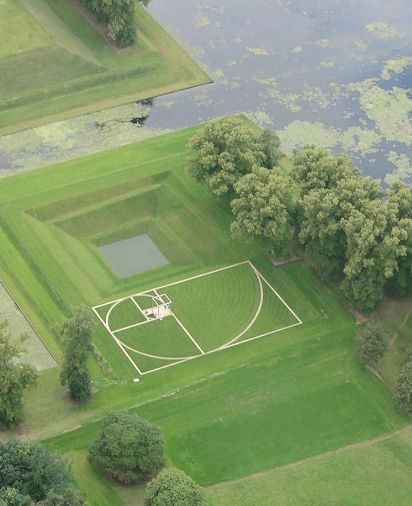
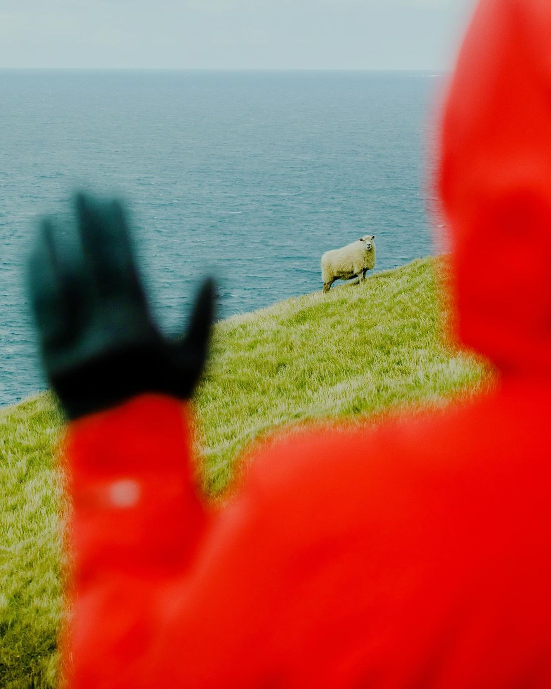

Who we are
We believe work should adapt to the creativity of whoever does it, and not the other way around. sinco institute designs and develops the tools, objects and communities that make that possible.

The dominant modern belief is that peace and well-being will come from producing ever more: more speed, more scale, more consumption. Schumacher doubted it fifty years ago, and we doubt it still. A way of life that keeps multiplying its wants, and arranges people around machines to satisfy them, has no permanence.
With automation and artificial intelligence, the old question returns: who adapts to whom? We think technology should do the opposite of what it usually does — lighten the burden people carry, and leave more room for what only people can do.
We are of nature, not above it. That is why what we make is small, open and made to last.
“Wisdom demands a new orientation of science and technology towards the organic, the gentle, the non-violent, the elegant and beautiful.”
E. F. Schumacher, Small Is Beautiful, ch. 2
Work
Work is not a cost to be cut. It is where a person develops their gifts, meets other people, and makes what a good life needs.
“The function of work [is] at least threefold: to give a man a chance to utilise and develop his faculties; to enable him to overcome his egocentredness by joining with other people in a common task; and to bring forth the goods and services needed for a becoming existence.”
E. F. Schumacher, Small Is Beautiful, ch. 4
To organize work so that it becomes “meaningless, boring, stultifying, or nerve-racking for the worker”, Schumacher wrote, “would be little short of criminal”: it would show a greater concern with goods than with people. Most work is still organized this way, and much of the new automation only makes it faster.
In 1891, Leo XIII’s Rerum Novarum put the dignity of work and of workers at the center. In 1981, John Paul II wrote in Laborem Exercens that work is “for man”, and not man “for work”.
In 2026, Leo XIV’s Magnifica Humanitas warns that AI often forces workers to adapt to the speed and demands of machines, rather than machines being designed to support those who work.
Character, Schumacher wrote, is formed primarily by work. The shape of work is not a technical detail; it is the shape of a life.
“Every design choice reflects a vision of humanity.”
Magnifica Humanitas §111
Tools
Schumacher asked for methods and equipment cheap enough to be accessible to virtually everyone, suitable for small-scale application, and compatible with man’s need for creativity. That is our brief.

“The primary task of technology, it would seem,” he wrote, “is to lighten the burden of work man has to carry in order to stay alive and develop his potential.” Too often it does the reverse: it replaces the hands and the judgment, and leaves people minding the machine.
Gandhi put it in one line: not mass production, but production by the masses — the clever brains and skillful hands everyone already has, supported by first-class tools. That is what we try to make.
Everything we make is modular. Nothing is produced without an owner, and nothing you already have stops working when the core evolves: to make programmed obsolescence obsolete.
“Nature always, so to speak, knows where and when to stop.”
E. F. Schumacher, Small Is Beautiful, ch. 10
Education
Education is our greatest resource — but only if it teaches what to do with our lives before it teaches how to do things.
“More education can help us only if it produces more wisdom.”
E. F. Schumacher, Small Is Beautiful, ch. 6
For Schumacher, “the task of education would be, first and foremost, the transmission of ideas of value, of what to do with our lives.” Know-how matters, but it takes second place: it is foolhardy to put great powers into the hands of people who have no idea what to do with them.
We feel this sharply today. Artificial intelligence puts enormous know-how into everyone’s hands; what is scarce is the judgment to use it well.
That is why every tool we make comes with the ideas behind it, and why our research is open. The library at the end of this page is part of the work, not decoration.
Ownership
Whoever owns the tools shapes the work. We want organizations that serve the people in them, instead of using them.

In 1951, Ernest Bader handed his chemical company, Scott Bader, to the people who worked in it, gathered in a Commonwealth. Schumacher saw in it industrial organization used “as a servant of man, instead of allowing it to use men simply as means to the enrichment of the owners of capital.”
Ownership, he observed, had been “replaced by specific rights and responsibilities in the administration of assets.” The Bader family gave up the chance of becoming inordinately rich, and the company did not suffer for it.
Small tools, open designs and things made on demand are a beginning. The harder question is who the work belongs to. We study it in the open, and want our labs to answer it in practice.
Labs
Small labs, each close to the people it serves. We design & develop communities. Cultures. Software. Hardware.
Library